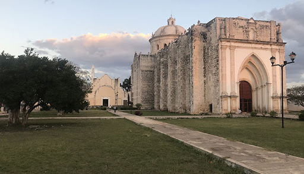

Umán, Yucatán
Photo of the main church in Umán, Yucatán City. 2021
Brief history about Umán
There are no exact data on the foundation of Umán. In pre-Hispanic times it was part of the Ah Canul
chieftain .
In 1825 Umán became part of the Camino Real Bajo Party, with its head in Hunucmá and in 1881 the
population
acquired the
category of town, forming part of the so-called Hunucmá party .
Food recomendations
Panuchos
They are made with corn masa (dough), cooked on a dry, hot cast iron skillet until slightly puffy,
then a slit is made in the tortilla and it is stuffed with refried beans, sealed, then lightly
fried.
It is then topped with tomatos, lettuce, a slice of cucumber, ground beef, chicken or turkey,
avocado and pickled
onions.
Ingredients
- Refried black beans
- 1 kg of corn dough
- 100g flour
- Oil or butter
- 1 head of lettuce
- Pickled purple onion
- Tomatoes
- Avocado
- Shredded roast turkey or chicken
Salbutes
They are similar to panuchos but without the refried beans inside the tortilla.
They are also fried and topped with the same ingredients though.
There are many variations of the toppings in salbutes, it can be pork (“Cochinita”, or “Castacan”),
beef (“salpicón”),
chicken, turkey, fish, shrimp, octopus, scrambled egg, or other stews or “guisados” such as relleno
negro, picadillo,
carne en salsa verde, even scrambled eggs or simply black beans.
Ingredients
- 1 kg of corn dough
- 100g flour
- Oil or butter
- 1 head of lettuce
- Pickled purple onion
- Tomatoes
- Avocado
- Shredded roast turkey or chicken
If you want to know more information about this city visit: http://www.inafed.gob.mx/work/enciclopedia/EMM31yucatan/municipios/31101a.html